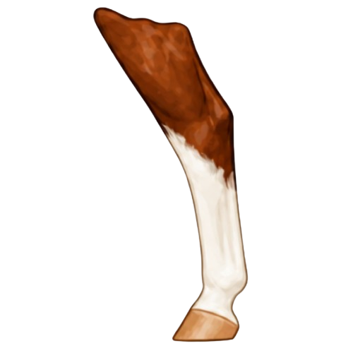
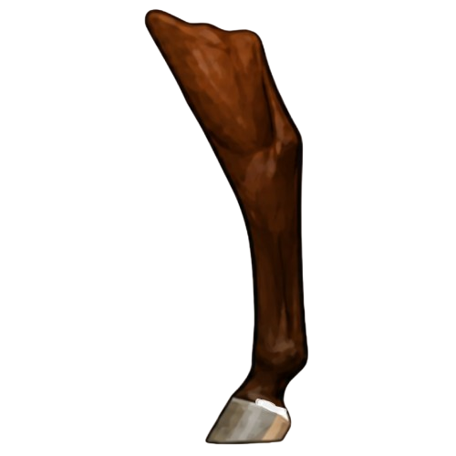
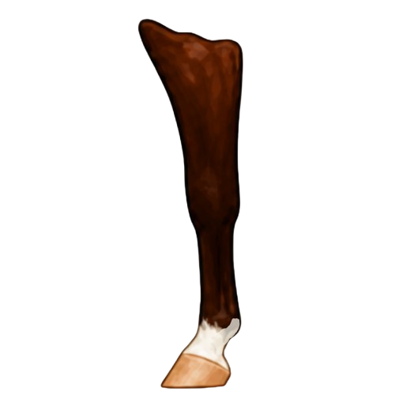
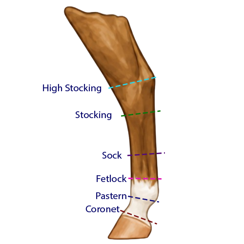

No White
No WhiteNo Marking
This describes a leg with no white markings. The horse’s coat color extends down the entire leg to the hoof, with only normal variations in hoof color.
Learn how lower-leg markings are named and described, including partial markings, ermine marks, and how the height of white on the leg affects terminology, supported by clear visual examples.

Leg marking names are based on how high the white extends from the hoof. The tabs below break down leg markings, partial markings, and height guides to show how and where terminology changes.
Leg markings are named based on how high the white extends from the hoof. These are the terms used in horse identification.
No WhiteThis describes a leg with no white markings. The horse’s coat color extends down the entire leg to the hoof, with only normal variations in hoof color.
 Lowest White
Lowest WhiteA coronet is a narrow band of white found at or just above the coronet band, directly above the hoof.
 Pastern
PasternThis marking extends above the coronet and may cover part or most of the pastern, but it does not clearly extend above the fetlock.
 Fetlock
FetlockThis marking reaches the fetlock area. It describes white that extends higher than a pastern but does not rise high enough to be called a sock.
 Lower Cannon
Lower CannonA sock has white that extends above the fetlock and partway up the cannon bone, but does not rise as high as a stocking.
Higher WhiteWith a stocking white extends well up the lower leg, often reaches toward the knee in the front legs or the hock in the hind legs.

Highest WhiteA high stocking has white that extends onto or above the knee or hock.
Partial markings do not wrap evenly around the entire leg. They may appear on only one side or rise unevenly.

Partial Low WhiteA partial coronet has white that touches or follows part of the coronet band but does not form a complete band around the leg.

Partial Higher WhiteA partial fetlock has white that reaches the fetlock on only part of the leg or rises unevenly.
 Spotted Detail
Spotted DetailErmine marks are small dark marks within white that should be be recorded, as they can help differentiate between similar markings.
These height guides show how far up the leg the white extends and where marking names begin to change. Use them as visual references rather than rigid rules, as real markings can be uneven or irregular.

